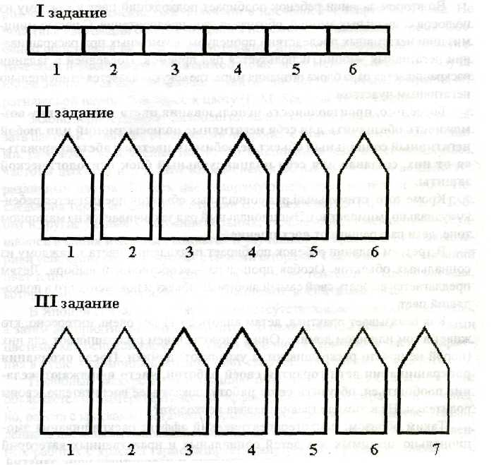

Тест "Домики"
«Ребята! Сегодня мы будем заниматься раскрашиванием. Посмотрите, что лежит у вас на столах: лист, который мы будем раскрашивать. На листе вы видите три задания, обозначенные римскими цифрами. Начнем с первого.
I задание.
Нужно раскрасить дорожку из шести клеточек. Посмотрите, какая она бесцветная, неинтересная. Взгляните на карандаши (возможна беседа: сколько карандашей, какого цвета), какие разные, красивые цвета! Есть ли среди них карандаш такого цвета, который нравится вам больше осталь-ных? Не смотрите друг на друга. У каждого из вас этот цвет может быть своим. Карандашом, ко-торый вы выбрали, раскрасьте первую клеточку. Как красиво получилось! Отложите карандаш в сторону, в этом задании он больше не понадобится. Посмотрите на оставшиеся карандаши. Есть ли среди них еще один карандаш, цвет которого нравится вам больше остальных? Возьмите его и раскрасьте следующую клеточку. Отложите карандаш в сторону...»
Таким образом нужно раскрасить все шесть клеточек. Необходимо проследить, чтобы раскра-шивание производилось слева направо. Для стимуляции цветовых выборов можно использовать выражения «цвет тоже красивый», «лучше остальных». Если ребенок отказывается выбирать далее, можно стимулировать маленьких детей следующим образом: «Посмотри, карандашикам грустно, что их не выбрали», или «Посмотри, карандашик говорит тебе, что он тоже красивый, лучше других».
В конце задания полюбуйтесь, как хорошо получилось и какой красивой, разноцветной стала наша дорожка.
II задание.
«Второе задание отличается от первого. Посмотрите на лист. На что похожи эти фигуры? На домики. Здесь целая улица. Но она такая бесцветная, неинтересная. Нужно ее раскрасить. Но прежде чем начинать раскрашивать, послушайте, как правильно это сделать. На этой улице в до-миках живут разные хозяева. Я скажу, кто живет в каждом домике, а вы покрасьте этот домик в подходящий для этого хозяина цвет.
Например: «В первом домике живет счастье. Выберите карандаш, цвет которого, вам кажется, подошел бы этому хозяину. Раскрасьте первый домик. Молодцы! Карандаш не нужно откладывать. Домиков много, больше, чем карандашей, а их хозяева могут быть похожими».
Список слов: счастье, горе, справедливость, обида, дружба, ссора, доброта, злоба, скука, восхищение (для детей 5-7 лет).
Все слова произносятся с четким интонированием, для маленьких эмоционально окрашиваются. Если детям непонятно, что обозначает названное слово, нужно его объяснить. Необходимо избе-гать объяснения через понятия: счастье - это радость. Новые слова могут оказаться также непо-нятны детям. В объяснении лучше использовать предикаты, содержащие глагольные формы, и наречия, выражающие чувства и настроения.
Рекомендуемые пояснения:
Счастье - когда нам весело, всё хорошо получается и мы все довольны.
Горе - когда у человека случилось что-то плохое и он сильно расстроился, ему очень горько.
Справедливость - когда все по-честному, поровну, по правилам.
Обида - когда кого-то незаслуженно обидели, огорчили. Обманули, что-то отняли.
Дружба - когда мы дружим, помогаем друг другу, защищаем друг друга.
Ссора - когда кто-то раздружился и ругается.
Доброта - когда кто-то делает хорошее людям, делится, не жадный, жалеет тех, кому плохо.
Злоба - когда кто-то сердится, обижает, хочет сделать другому плохо.
Скука - когда неинтересно, нечего делать, все надоело, мамы дома нет.
Восхищение - когда мы любуемся чем-то очень красивым, нам очень радостно от этого и мы чувствуем большое удовольствие.
Следует объяснить детям, что во втором задании домиков много и хозяева могут быть похожими, а значит, и цвет домиков может быть одинаковым, поэтому карандаш после использования нужно положить к остальным. Таким образом обеспечивается адекватный выбор цветов. После выполнения задания необходимо похвалить детей, полюбоваться, какой веселой стала улица. Этим достигается позитивное отношение к процедуре исследования и психотерапевтический эффект.
Для детей 4-5 лет.
Этот домик веселый,
а этот грустный, его кто-то обидел.
Этот домик добрый,
а этот злой, он сердится, ругается.
Этот домик скучает, а этот удивляется, ему все интересно.
III задание.
«Ребята, у нас осталось еще одно задание. Чтобы его выполнить, нужно послушать еще одно правило. Открою тайну. На этой улице живем мы. В каждом домике мы делаем что-то особенное, и в зависимости от того, что мы там делаем, этот домик нужно раскрасить в свой подходящий цвет».
Обозначение домиков (для детей 5-8 лет):
первый домик - наш сад (школа),
во втором домике мы рисуем,
в третьем мы танцуем,
четвертый домик - музей,
в пятом мы поем,
в шестом - считаем,
в седьмом - читаем, в восьмом - играем,
в девятом - наблюдаем природу и т. д.
Инструкция для раскрашивания последнего домика.
«Придумайте и поселите в этом домике своего хозяина, для кого вы бы раскрасили этот домик, придумайте и то, что он там делает. Выберите для своего хозяина подходящий цвет и покрасьте домик. Кто закончит раскрашивать, тихонько на ушко мне скажет, кто в этом домике живет и что там делает тот, для кого вы раскрасили этот домик».
На ответном листе делается пометка, для кого был раскрашен домик и что делал его хозяин.
Для детей 4-5 лет.
Этот домик занимается полезными делами.
Этот домик читает сказки.
Этот домик конструирует.
Этот домик поет,
Этот - рисует.
Этот домик играет.
А для этого домика придумай занятие сам.
Допускается для детей дошкольного возраста помогать в случае необходимости в раскраши-вании, если ребенок не успевает и это сдерживает работу группы, на ответном листе делается соответствующая пометка.
Схема описания ответных листов.
1. Характер раскрашивания. Определение психологического состояния ребенка по предпочтению цвета, характеру штриховки и заполнения пространства - особый вид тестирования, при котором ребенок не скован и свободно проявляет себя.
По данным С. Толкачевой и Н. Титовой, предпочтение ребенком теплых тонов (желтый, оранжевый, красный, розовый, красно-коричневый, коричневый) означает его внутренний подъем, активность, он настроен больше на действие и подвижные игры, ему необходимо выплеснуть избыток энергии.
Если ребенок предпочел холодные тона (голубой, синий, сине-зеленый, фиолетовый) - он склонен к созерцанию, размышлению, его психическое состояние достаточно стабильно.
Предпочтение спектрально-контрастных тонов в сочетании с резкими, угловатыми или «мохнатыми» штрихами говорит о перенапряжении, внутреннем возбуждении, поиске выхода из какой-то ситуации или ее объяснения.
Если контрасты не насыщенны, линии плавные, округлые, то ребенок ищет «золотую середину», стремится к цельности и гармонии. С такими детьми нельзя проявлять излишнюю категоричность, так как это может привести к развитию у ребенка замкнутости.
Если ребенок, раскрашивая рисунок, выходит за границы его контура, он стремится к свободе и независимости до упрямства из-за подавления взрослыми. Возможно, он несколько рассеян, но это - проявление замкнутости на фантазиях. С такими детьми также нельзя проявлять излишнюю категоричность, для такого ребенка необходимо внести сказку в обыденные дела.
Если ребенок не выходит за границы контура рисунка, не исключено, что он насторожен, замкнут из-за неуверенности в себе. Скованность может мешать ему в общении и учебе. Он может стать вечно «ведомым», обидчивым, раздражительным из-за несоответствия своего поведения внутренним побуждениям и излишней требовательности взрослых.
Если ребенок заполняет часть рисунка, для него значимы детали, «мелочи», переход от частного к общему. Такой ребенок склонен к точным и естественным наукам. Если ребенок заполняет весь рисунок - у него развито обобщающее мышление, он умеет находить взаимосвязь между внешне не связанными вещами. Это - фантазер со склонностями к литературе и искусствам.
Если, раскрашивая рисунок, ребенок заполняет только нижнюю его часть, цикл его биоритмов и внутреннего психологического состояния пограничный: переход от спада к подъему. Ребенок заполняет только верхнюю часть рисунка- пик интенсивности биоритмов. Максимальная активность восприятия любой информации может граничить с перевозбуждением, несмотря на внешнее спокойствие.
2. Цветовые выборы. Первая информация для консультирования - это инверсии, наблюдаемые при выполнении I задания (раскрашивание дорожки). По сути, ребенок дает психологу цветовой градусник, цветовое мироощущение. Психолог должен насторожиться, если основные цвета ребенок ставит на последние два места, а негативные - на первые. Интерпретация цветовых выборов ведется в соответствии с цветовым диагностическим тестом Люшера [43]. Следует обращать внимание на местоположение основных (синего, зеленого, красного, желтого) и негативных цветов (коричневого и черного). Присутствие коричневого и черного цветов в начале цветового ряда означает негативное отношение к жизни и обозначается знаком тревоги: «!», «!!» или «!!!». При этом «!» соответствует наличию коричневого или черного цвета на третьем или четвертом месте цветового ряда, «!!» соответствует наличию коричневого или черного цвета на втором месте, «!!!» - наличию одного из перечисленных цветов на первом месте. Кроме того, психологический или физиологический стресс, вызывающий тревогу, считается также по-разному выраженным, если основной цвет находится на пятом или шестом месте цветового ряда и обозначается соответственно:«!!» и «!!!». Таким образом, интенсивность тревоги измеряется суммой знаков «!», теоретически возможное их количество
равно 12! Последующий анализ цветового обозначения ребенком социальных объектов во II и III заданиях может указать на возможные обстоятельства, вызывающие стресс.
Рассмотрим, как выполнил I задание Юра С, шести с половиной лет. Его цветовая дорожка (красный, синий, черный, зеленый, коричневый, желтый) содержит инверсии, выраженные суммой тревог в 4!: умеренные протестные реакции (черный цвет на третьем месте) и выраженный стресс, вызванный неудовлетворенной потребностью в активном взаимодействии с окружающими - желтый цвет на последнем месте. Соотнесение позиции черного цвета и обозначение ребенком черным цветом социальных объектов во II и III заданиях указывают на возможные обстоятельства, вызывающие стресс: «доброта», «игра», «папа».
Однако необходимо помнить, что дети с инверсиями цветового градусника имеют нарушения личностного развития на уровне базовых эмоций.
3. Сфера социальных эмоций. Здесь важно обратить внимание на два факта.
Первый — собственно дифференциация эмоций. Безошибочное выполнение задания указывает на сформированность системы социальных чувств, тонкость, дифференцированность эмоциональной сферы ребенка, его способность вычленять субъектно-объектные связи, способность ребенка подниматься над ситуацией, отличать в конечном счете добро от зла. Здесь важно проследить, каким цветом ребенок обозначил позитивные и негативные социальные объекты. Хорошо, если ребенок обозначил позитивные социальные объекты основными цветами, а негативные - коричневым или черным. Часто дети обозначают одним и тем же цветом позитивные и негативные объекты. Эти случаи указывают на возможные проблемы ребенка в общении и деятельности.
Второй факт является производным от первого и определяет систему личностных отношений и основных блоков структуры личности, указывая на возможные деформации и варианты личностного развития. Здесь необходимо отследить место позитивного и негативного полюсов отдельной социальной эмоции, обозначенных цветом. При нормальном варианте личностного развития позитивные полюса эмоций всегда находятся выше по рейтингу цветового градусника, чем негативные. В противном случае выявляются деформации в определенных блоках системы личностных отношений.
4. Сфера деятельностных отношений. Выполнение этого задания
определяет систему деятельностных отношений и актуальных ценностейребенка. Предполагается, что именно эти отношения составляют собственно
предиспозиции личности и определяют осознанные формы поведения ребенка: то, насколько сформированы его потребности в той или иной деятельности, с каким настроением он посещает образовательное учреждение, какие ценности и актуальные переживания достижения этих ценностей определяют наличие у него осознанных проблем и возможность их решения.
5. Резюме.
В резюме констатируются основные положения интерпретации цветовых выборов ребенка и формулируются его проблемы.
6. Рекомендации. В рекомендациях указывается необходимый комплекс коррекционных работ, дополнительных исследований на основании выявленных у ребенка проблем.
